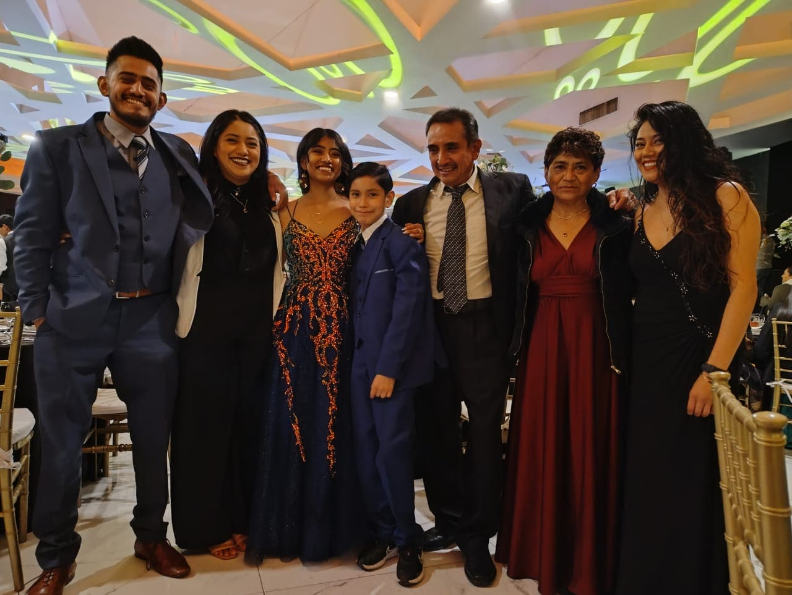

¿Quién soy yo?
Me llamo Karen Barrera soy una persona introvertida, con un caracter fuerte, soy muy enojona pero a la vez muy tranquila. Me gusta mucho la música, bailar sola, jugar baloncesto y ver peliculas romanticas y de acción.
Actualmente estoy por terminando mi tesis para titularme como "Licenciada en Diseño Gráfico", de manera personal estoy retomando el ejercicio después de muchos años, asistiendo al gimnasio por lo menos 2 veces por semana.

Mi familia
Mi familia esta integrada por 10 personas, mi papá Jorge Barrera que tiene 54 años, mi mamá Sebastiana Luna que tiene 60 años y estudio la licenciatura de enfermeria, mi hermana Judy Barrera quién fallecio hace unos años y fue "Licenciada en derecho", su esposo Oscar Gómez que tiene 33 años y es "Licenciado en Derecho", su hijo Daniel Gómez que tiene 11 años, mi hermana Sandy Barrea que tiene 32 años y es "Licenciada en Estomatología", mi hermana la mediana Adriana Barreraque tiene 30 años y es Licenciada en Psicología, su esposo Ernezco Erizondo que es "Licenciado en Pedagogía, mi hermano Jorge Barrera que tiene 27 años y es "Ingeniero en diseño automotriz".
Somos una familia que se lleva bien, con respeto y apoyo incondicional, mis padres nos enseñaron a cuidarnos como familia y apoyarnos cuando alguien lo necesita. El hogar que formaron mis padres es de mucho años y aunque todos tenemos un caracter muy diferente, fuerte y en algunas personas un poc explosivos, tenemos una convivencia muy sana. Cada integrante de mi familia a tomado un rumbo distinto y aunque no todos vivimos juntos, en el mismo estado o país, nos reunimos para celebrar los cumpleaños, navidad, año nuevo o en alguna otra fiesta.

Mis materias preferidas
Cultura física
Me gusta la materia de Cultura Física porque abarca temas relacionados con el bienestar físico, mental y emocional, promoviendo hábitos saludables y el desarrollo integral de la persona. Esta materia no solo se enfoca en el ejercicio o el deporte, sino también en el conocimiento del cuerpo humano, la prevención de enfermedades y el trabajo en equipo. Además, ayuda a reducir el estrés, mejora la concentración y fomenta la disciplina. Me parece fascinante cómo la actividad física puede transformar tanto el cuerpo como la mente, creando un equilibrio vital para una vida saludable.
Artes
Me gustan las artes porque son una forma única de expresión humana que trasciende palabras y culturas. A través de las artes, como la música, la pintura, el teatro o la literatura, podemos explorar emociones, ideas y perspectivas de maneras profundas y significativas. Las artes nos permiten conectar con nuestra creatividad, imaginar mundos nuevos y comprender mejor el mundo en el que vivimos. Además, el arte es un reflejo de la historia, la identidad y las experiencias personales y colectivas. Disfruto cómo el arte puede inspirar, provocar reflexión y evocar sentimientos que nos hacen sentir más conectados con los demás y con nosotros mismos.
Sistemas de reproducción
La materia de Sistemas de Reproducción me gusta porque explora cómo se producen y replican contenidos gráficos y visuales en diferentes formatos y medios. Es un campo que combina el conocimiento técnico con la precisión, abarcando desde métodos tradicionales de impresión como el offset, hasta tecnologías digitales como la impresión en 3D o la reproducción multimedia. Esta materia permite entender cómo se optimiza la producción para obtener resultados eficientes y de alta calidad, ya sea en tirajes grandes o en proyectos personales. Además, aprender sobre los diferentes sistemas de reproducción es crucial para quienes trabajan en el diseño gráfico, la publicidad o la industria editorial, ya que les permite tomar decisiones informadas sobre qué técnicas utilizar para transmitir su mensaje de la manera más efectiva. Me atrae cómo se puede lograr que una idea visual se mantenga fiel y consistente en distintos soportes.